정보통신산업기사 (2010-03-07 기출문제)
1과목: 디지털전자회로
1. 다음 중 시미트 트리거 회로와 가장 거리가 먼 것은?
- 전압비교회로
- 구형파회로
- 쌍안정회로
- 증폭회로
(정답률: 79%)

2. 다음 중 궤환발진기에서 궤환율 β=0.⑤일 때 발진조건이 성립하려면 증폭도(A)의 크기는?
- 0.5
- 5
- 10
- 20
(정답률: 62%)
3. 다음 중 차동증폭기회로에서 이미터 저항 대신 정전류원을 사용하는 주된 이유는?
- 전류이득을 크게 하기 위해서
- 전압이득을 크게 하기 위해서
- 바이어스 전압을 크게 하기 위해서
- CMRR을 크게 하기 위해서
(정답률: 61%)
4. 25:1의 리플 카운터를 설계하고자 한다. 최소한 몇 개의 플립플롭이 필요한가?
- 4개
- 5개
- 6개
- 7개
(정답률: 86%)
5. 다음 중 클립핑 회로에 대한 설명으로 틀린 것은?
- 파형 변환회로의 일종이다.
- 직렬형과 병렬형이 있다.
- 적분기의 일종이다.
- 진폭 조작회로의 종류이다.
(정답률: 73%)
6. 다음 중 이미터 플로어(emitter follower)증폭기의 일반적인 특징이 아닌 것은?
- 전류이득이 크다.
- 입력 임피던스가 높다.
- 출력 임피던스가 높다.
- 전압이득은 1보다 작다.
(정답률: 73%)
7. 다음 중 논리식
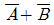
와 등가인 회로는?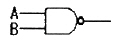
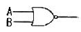
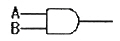
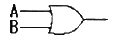
(정답률: 59%)
8. 컬렉터 또는 베이스 동조형 발진회로에서 동조회로의 공진주파수와 이들 발진회로의 발진주파수는 어떤 관계에 있어야 하는가?
- 공진주파수와 발진주파수는 같아야 한다.
- 공진주파수는 발진주파수보다 약간 높아야 한다.
- 공진주파수는 발진주파수보다 약간 낮아야 한다.
- 공진주파수와 발진주파수는 아무런 관계가 없다.
(정답률: 54%)
9. 접합 트랜지스터의 스위칭 속도를 빠르게 하기 위한 방법으로 옳은 것은?
- 베이스 회로에 직렬로 저항을 접속한다.
- 베이스 회로에 인덕턴스를 접속한다.
- 베이스 회로에 저항과 콘덴서를 접속하여 연결한다.
- 베이스 회로에 제너 다이오드를 접속한다.
(정답률: 61%)
10. 다음 중 회로내의 분포용량, 표유 인덕턴스 또는 회로정수의 불평형에 의해서 다른 주파수의 발진이 생기는 현상은?
- 고유 진동 발진
- 이완 발진
- 다이나트론 발진
- 기생 발진
(정답률: 73%)
11. 다음의 회로에서 입력전압 Vi = 100 sin ωt[V]일 때, 출력전압 Vo의 크기는?
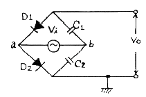
- 100[V]
- 141[V]
- 200[V]
- 282[V]
(정답률: 45%)
12. 전압이득이 40[dB]인 저주파 증폭기에 전압부궤환율을 0.98로 걸어줄 때, 왜율의 개선율[%]은 약 얼마인가?
- 6.26
- 7.25
- 8.25
- 9.26
(정답률: 35%)
13. 다음 중 디코더(decoder)에 대한 설명이 아닌 것은?
- AND 회로의 집합으로 구성되어 있다.
- 2진수를 10진수로 변환하는 회로이다.
- 10진수를 BCD로 표현할 때 사용한다.
- 명령 해독이나 번지를 해독할 때 사용한다.
(정답률: 75%)
14. 반송파 vc(t) = Vc cos ωct, 신호파 vs(t) = Vs cosωst라 할 때, FM 피변조파 vm(t)를 표시한 것은?
- vm(t) = Vc(1+mf cos ωst) cos ωct
- vm(t) = Vc cos(ωct+mf sin ωst)
- vm(t) = Vc cos(ωct+
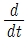
vs (t)) - vm(t) = Vc cos(ωct+
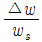
Vs cos ωst)
(정답률: 41%)
15. 시프트 레지스터 출력을 입력에 되먹임 시킴으로써 클럭펄스가 가해지면 같은 2진수가 레지스터 내부에서 순환하도록 만든 계수기는?
- 링 계수기
- 2진 리플 계수기
- 동기형 계수기
- 업/다운 계수기
(정답률: 63%)
16. 다음 중 논리식
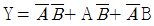
을 간략화하면?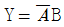
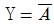
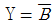
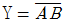
(정답률: 59%)
17. 신호를 양자화하기 전에 미약한 신호는 진폭을 크게 하고, 진폭이 큰 신호는 진폭을 줄이는 기능은?
- 프리엠퍼시스(Pre-emphasis)
- 압신(Compression-expansion)
- 디엠퍼시스(De-emphasis)
- FM 복조시의 리미팅(Limiting)
(정답률: 78%)
18. 다음 그림의 회로는 어떤 궤환에 속하는가?
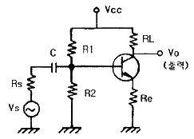
- 직렬 전류 부궤환
- 병렬 전류 부궤환
- 병렬 전압 부궤환
- 직렬 전압 부궤환
(정답률: 49%)
19. 다음 중 배타적 논리합(EX-OR)을 나타내는 논리식이 아닌 것은?
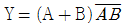
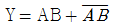
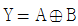
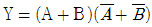
(정답률: 53%)
20. 다음 중 FM 복조회로가 아닌 것은?
- Slope detector
- Foster-seeley detector
- Ratio detector
- De-emphasis detector
(정답률: 54%)
2과목: 정보통신기기
21. 모뎀의 구조에서 송신부와 수신부에 공통으로 구성되는 요소는?
- 대역제한여파기
- 등화기
- 자동이득제어기(AGC)
- 디코더
(정답률: 53%)
22. 정보를 전송하는 방식 중 축적교환방식이 아닌 것은?
- 회선교환방식
- 데이터그램 패킷교환방식
- 메시지교환방식
- 가상회선 패킷교환방식
(정답률: 60%)
23. 다음 중 ATM 교환방식의 특징이 아닌 것은?
- 비동기 방식이다.
- 다양한 속도를 제공한다.
- 음성, 화상, 데이터 등의 서비스를 제공할 수 있다.
- 정보의 지연이 일정하다.
(정답률: 59%)
24. 디지털 TV 방송의 특성에 대한 설명으로 틀린 것은?
- 영상 및 음향 신호의 압축이 용이하고 녹화 재생시 화질이나 음질의 열화가 적다.
- 다양한 멀티미디어의 많은 정보를 서비스할 수 있다.
- 오류정정 기술을 사용할 수 있고 저장 및 복제에 따른 손실이 적다.
- 상호간섭이 비교적 많고 신호의 열화가 완만하다.
(정답률: 67%)
25. 다음 중 화상통신회의 시스템의 기본적인 구성요소가 아닌 것은?
- 음향부
- 제어부
- 호스트 컴퓨터
- 영상부
(정답률: 65%)
26. 다음 중 CATV의 헤드엔드(Head-end)의 구성요소가 아닌 것은?
- FM 증폭기
- PILOT 신호 발생기
- TV 변조기
- 간선 증폭기
(정답률: 43%)
27. 다음 중 데이터 통신시스템에서 통신제어장치의 주요 기능은?
- 모뎀과 통신회선을 연결하는 기능 수행
- 데이터 단말장치와 전송회선을 연결하는 기능 수행
- 컴퓨터와 전송회선 사이에 위치하여 각종 제어기능 수행
- 데이터 단말장치와 다중화장비를 연결하는 기능 수행
(정답률: 48%)
28. 다음 중 좌표를 판독하여 아날로그 형태의 설계도면이나 도형을 디지털 형태로 컴퓨터에 입력하는데 사용되는 것은?
- 터치스크린
- 디지타이저
- OMR
- OCR
(정답률: 64%)
29. 다음 중 호텔, 병원, 학교 등에서 방범, 방재 등의 목적에 주로 이용되는 것은?
- CATV
- CCTV
- VRS
- HDTV
(정답률: 79%)
30. 다음 중 역다중화기에서 두 개의 별도의 채널이 지닌 상대적 지연 때문에 생기는 비트열의 혼란을 조정해 주는 것은?
- Port selector
- Modem
- DSU
- Circulating Memory
(정답률: 52%)
31. 다음 중 초소형 안테나를 사용하는 지상의 지구국에 해당되는 것은?
- VSAT
- TWTA
- SNG
- LNA
(정답률: 63%)
32. DTE와 디지털 데이터 교환망을 접속하기 위한 DSU의 기능으로 적합하지 않은 것은?
- 신호 파형의 변환
- 신호 전송속도의 변환
- 제어 신호의 삽입
- 프레임의 시분할 다중화
(정답률: 49%)
33. 다음 중 정지 위성통신에 대한 설명으로 옳지 않은 것은?
- 통신 영역이 넓고, 고품질의 통신이 가능하다.
- 다원접속(multiple access)이 가능하다.
- 방송에 이용시 난시청 지역을 해소할 수 있다.
- 전파의 전송지연이 발생하지 않는다.
(정답률: 71%)
34. 다음 중 주반사경과 부반사경이 있는 안테나로서 위성통신 지구국 안테나로 주로 사용되고 있는 것은?
- 파라볼라 안테나
- 야기 안테나
- 헬리컬 안테나
- 카세그레인 안테나
(정답률: 60%)
35. 다음 중 팩시밀리의 구성요소가 아닌 것은?
- 주사장치
- 광전변환
- 수신기록
- 주파수체배
(정답률: 62%)
36. 다음 중 2개의 음성대역폭 회선을 이용하여 광대역에서 얻을 수 있는 통신 속도를 갖는 것은?
- 다중화기
- 역 다중화기
- 지능 다중화기
- 시분할 다중화기
(정답률: 57%)
37. 다음 중 대역 압축 방식으로 MH, MR 부호화 방식을 사용하여 전송하는 것은?
- G1 FAX
- G2 FAX
- G3 FAX
- G4 FAX
(정답률: 71%)
38. 정보통신시스템을 구성하는 기본요소 중에서 데이터 처리계에 해당하는 것은?
- 신호변환장치
- 호스트컴퓨터
- 통신제어장치
- 단말장치
(정답률: 43%)
39. 다음 중 무선 수신기의 종합특성을 표시하는 사항이 아닌 것은?
- 변조도
- 선택도
- 안정도
- 충실도
(정답률: 59%)
40. 다음 비디오텍스의 방식 중 알파 지오메트릭 방식이라고도 부르는 것으로 도형을 점, 선, 원호, 사각 등의 위치나 조합으로 표현한 것은?
- CEPT 방식
- CAPTAIN 방식
- NAPLPS 방식
- 패턴 방식
(정답률: 49%)
3과목: 정보전송개론
41. 해밍 거리가 7일 때 정정할 수 있는 에러 개수는?
- 1
- 2
- 3
- 4
(정답률: 61%)
42. 이동통신의 채널에서 일어나는 현상과 가장 관련이 적은 것은?
- 음영효과
- 방해파 억압
- 도플러 현상
- 인접채널 간섭
(정답률: 48%)
43. 재생중계기의 구성요소가 아닌 것은?
- 등화증폭회로
- 식별회로
- 펄스재생회로
- 위상검출기
(정답률: 61%)
44. 에러율이 5×10-5 [비트/초]인 전송회선에서 9600[bps] 속도로 15분간 전송할 때의 에러 비트수는?
- 43[비트]
- 288[비트]
- 432[비트]
- 720[비트]
(정답률: 54%)
45. PCM 전송 방식에서 4[kHz]의 대역폭을 갖는 음성 정보를 8[bit] coding으로 부호화 한다면 음성을 전송하기 위한 데이터 전송률은?
- 8[kbps]
- 32[kbps]
- 56[kbps]
- 64[kbps]
(정답률: 44%)
46. HDLC 프로토콜의 FCS에 대한 설명으로 가장 적합한 것은?
- 2차국 또는 복합국의 주소를 나타낸다.
- 프레임의 동기를 맞추기 위해 사용된다.
- 1차국 또는 복합국이 주소부에서 지정하는 2차국 또는 복합국에 대해 동작을 command로 지령한다.
- 프레임 내용이 잘 전송되었는지 확인하기 위한 에러검출용으로 사용되며 통상 16비트 CRC 방식을 이용한다.
(정답률: 53%)
47. 광학 파라미터 중 단일모드 광파이버인지 다중모드 광파이버인지를 구분하는데 사용되는 것은?
- 개구수
- 비굴절률차
- 수광각
- 규격화주파수
(정답률: 45%)
48. 데이터 전송에서 직렬전송과 병렬전송의 특징에 대한 설명으로 적합하지 않은 것은?
- 병렬전송은 직ㆍ병렬 변환회로가 필요하다.
- 직렬전송은 주로 원거리 전송에 사용된다.
- 직렬전송은 병렬전송에 비해 전송속도가 느리다.
- 병렬전송은 일반적으로 strobe와 busy 신호를 이용하여 데이터를 송ㆍ수신한다.
(정답률: 53%)
49. ARQ 전송 방식에서 상대방으로부터 Ack가 안 올 경우 어느 정도 기다렸다가 다음 행동을 하는데 무엇을 근거로 기다리는 시간을 판단하는가?
- 타이머
- 명령어
- 운영체제
- 메시지
(정답률: 56%)
50. 전송특성 열화요인은 크게 정상 열화요인과 비정상 열화요인이 있다. 비정상 열화요인에 해당되지 않는 것은?
- 주파수 편차
- 펄스성 잡음
- 단시간 레벨변동
- 순간적 단절
(정답률: 45%)
51. HDLC 전송제어절차에서 프레임을 구성하는 각 필드의 명칭을 순서대로 올바르게 배치한 것은?
- 주소 필드 - 제어 필드 - 정보 필드 - 플래그 필드 - 오류검사 필드 - 플래그 필드
- 플래그 필드 - 주소 필드 - 제어 필드 - 정보 필드 - 오류검사 필드 - 플래그 필드
- 플래그 필드 - 제어 필드 - 주소 필드 - 정보 필드 - 오류검사 필드 - 플래그 필드
- 오류검사 필드 - 주소 필드 - 플래그 필드 - 정보필드 - 제어 필드 - 플래그 필드
(정답률: 57%)
52. 프로토콜의 기능으로 적합하지 않은 것은?
- 주소부여
- 단순화
- 흐름제어
- 데이터의 분할 및 조립
(정답률: 37%)
53. 엘리어싱(aliasing)을 방지하기 위한 방법으로 옳은 것은?
- 표본화시 사용하는 비트의 수를 작게 한다.
- 신호주파수와 동일한 주파수로 표본화 한다.
- 신호주파수가 fm일 때 표본화주기는 1/fm보다 크게 한다.
- 표본화하려는 신호를 저역통과필터에 통과시킨 후 표본화한다.
(정답률: 48%)
54. 다음 중 비트율이 9600[bps]로 일정할 때 대역폭 효율이 가장 큰 것은?
- 전송대역폭이 1200[Hz]
- 전송대역폭이 2400[Hz]
- 전송대역폭이 4800[Hz]
- 전송대역폭이 9600[Hz]
(정답률: 46%)
55. 예측기를 사용하지 않고 샘플값 그 자체를 양자화하는 방법이 아닌 것은?
- 카운팅 양자화
- 직렬 양자화
- 병렬 양자화
- 적응형 양자화
(정답률: 49%)
56. 4상식 위상변조 방식에서 변조속도가 1200[Baud]일 때 데이터 신호속도는?
- 9600[bps]
- 4800[bps]
- 2400[bps]
- 1200[bps]
(정답률: 45%)
57. 마이크로파 통신에서 송수신 간 가시거리 내 전파에 해당되지 않는 것은?
- 산란파
- 직접파
- 지표파
- 반사파
(정답률: 39%)
58. 대역폭이 B[Hz], 신호대 잡음비가 0인 채널을 사용하여 데이터를 전송하는 경우 채널용량은 몇 [bps] 인가?
- 0[bps]
- B[bps]
- 2B[bps]
- 4B[bps]
(정답률: 55%)
59. PCM 과정 중 어느 단계에서 2진 부호로 변환되는가?
- 표본화
- 양자화
- 부호화
- 복호화
(정답률: 60%)
60. 양자화 잡음을 줄이기 위한 방법으로 적합하지 않은 것은?
- 압축을 행함
- 신장을 행함
- 선형 양자화를 수행
- 양자화 계단(스텝) 수를 많게 함
(정답률: 53%)
4과목: 전자계산기일반 및 정보설비기준
61. 보조 기억 장치의 특징을 열거한 것 중 틀린 것은?
- 자기테이프는 주소 개념이 거의 사용되지 않는 보조 기억 장치로서 순서에 의해서만 접근하는 기억장치이다.
- 자기테이프는 여러 개의 파일을 저장시킬 수 있는데 이들 파일은 여러 개의 레코드로 구성되어 있다. 이 레코드의 공백을 IRG라고 한다.
- 자기디스크는 주소에 의하여 지정할 수 있는 정보의 단위가 주기억 장치보다는 정밀하지 못하나 주소에 의하여 임의의 곳에 직접 접근이 가능하다.
- 가변 헤드 디스크에서 헤드에 의해 그릴 수 있는 동심원으로 구성된 기억 공간을 트랙이라 하며 고정 헤드 디스크에서는 이것을 실린더라고 한다.
(정답률: 39%)
62. 2진수 0111을 그레이 코드(Gray code)로 변환하면?
- 1010
- 0100
- 0000
- 1111
(정답률: 57%)
63. 오퍼랜드가 존재하는 기억장치 주소를 내용으로 가지고 있는 기억장소의 주소를 명령 속에 포함시켜 지정하는 방식은?
- relative addressing mode
- indirect addressing mode
- page addressing mode
- index addressing mode
(정답률: 38%)
64. 다음 진리표를 가지는 게이트 명칭은? (단, A, B는 입력, X는 출력이다.)
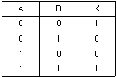
- NAND
- XOR
- XNOR
- NOR
(정답률: 42%)
65. 다음 각 ( ) 안에 알맞은 것은?
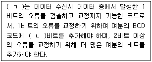
- (ㄱ) : 3초과 코드, (ㄴ) : 2
- (ㄱ) : 그레이 코드, (ㄴ) : 3
- (ㄱ) : 해밍 코드, (ㄴ) : 3
- (ㄱ) : 패리티 체크 코드, (ㄴ) : 2
(정답률: 53%)
66. UNIX에서 시스템과 사용자간의 인터페이스를 담당하며 사용자의 명령을 받아 명령을 수행하는 명령어 해석기는?
- i-node
- console
- kernel
- shell
(정답률: 50%)
67. 도형이나 사진 및 그 외의 자료로부터 이미지를 읽어 들이는 장치는?
- 키보드
- 스캐너
- 마우스
- 광학문자판독기(OCR)
(정답률: 64%)
68. ROM에 대한 설명 중 잘못된 것은?
- 내용을 읽어내는 것만 가능하다.
- 기억된 내용을 임의로 변경시킬 수 없다.
- 주로 마이크로프로그램과 같은 제어 프로그램을 기억시키는데 사용한다.
- 사용자가 작성한 프로그램이나 데이터를 기억시켜 처리하기 위해 사용하는 메모리이다.
(정답률: 27%)
69. 컴퓨터 제어방식 중에서 하드와이어드 방식이 마이크로 프로그래밍 방식보다 좋은 점은?
- 구조화된 제어 구조를 제공한다.
- 인스트럭션 세트 변경이 용이하다.
- 컴퓨터의 속도가 빠르다.
- 비교적 복잡한 명령 세트를 가진 시스템에 적당하다.
(정답률: 37%)
70. 순서도를 작성하는 이유로 부적합한 것은?
- 다른 사람에게 프로그램을 쉽게 전달할 수 있다.
- 프로그램의 수정이 용이하다.
- 처리순서를 기호로 표현하므로 프로그램의 흐름을 쉽게 파악할 수 있다.
- 프로그램 번역을 위해 필수적으로 작성하여야 한다.
(정답률: 54%)
71. 다음 ( ) 안에 들어갈 내용으로 가장 적합한 것은?
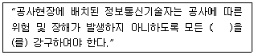
- 보호조치
- 안전수단
- 보호수단
- 안전조치
(정답률: 34%)
72. 다음 ( ) 안에 들어갈 내용으로 가장 적합한 것은?
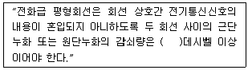
- 50
- 55
- 60
- 68
(정답률: 60%)
73. 통신사업자의 교환설비로부터 이용자 전기통신설비의 최초 단자에 이르기까지의 사이에 구성되는 회선을 말하는 것은?
- 국선
- 내선
- 전송설비
- 선로설비
(정답률: 73%)
74. 전기통신사업법의 목적에 속하지 않는 것은?
- 이용자의 편의를 도모함
- 공공복리의 증진에 이바지함
- 전기통신사업의 건전한 발전을 기함
- 전기통신사업의 운영을 위한 기본원칙을 규정함
(정답률: 32%)
75. 다음 ( ) 안에 들어갈 내용으로 가장 적합한 것은?
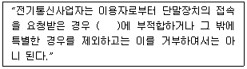
- 기술기준
- 통신규격
- 표준규격
- 설계도서
(정답률: 42%)
76. 다음 ( ) 안에 들어갈 내용으로 가장 적합한 것은?(관련 규정 개정전 문제로 여기서는 기존 정답인 3번을 누르면 정답 처리됩니다. 자세한 내용은 해설을 참고하세요.)
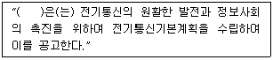
- 국무총리
- 지식경제부장관
- 방송통신위원회
- 한국정보화진흥원장
(정답률: 66%)
77. 정보통신공사의 하자담보책임 기간으로 틀린 것은?
- 터널식 통신구공사 : 3년
- 전송설비공사 : 3년
- 교환기설치공사 : 3년
- 위성통신설비공사 : 3년
(정답률: 53%)
78. 정보통신공사업의 등록을 할 수 있는 자는?
- 한정치산자
- 파산선고를 받고 복권되지 아니한 자
- 전기통신기본법의 규정에 의하여 벌금형의 선고를 받고 3년을 경과한 자
- 정보통신공사업법의 규정에 의하여 등록이 취소된 후 2년을 경과하지 아니한 자
(정답률: 57%)
79. 정보통신공사업의 등록기준에서 개인인 경우 자본금은?
- 1억원 이상
- 1.5억원 이상
- 2억원 이상
- 3억원 이상
(정답률: 49%)
80. 기간통신사업자는 국선을 몇 회선 이상으로 인입하는 경우에 케이블로 국선수용 단자반에 접속ㆍ수용하여야 하는가?
- 2회선
- 3회선
- 5회선
- 10회선
(정답률: 58%)